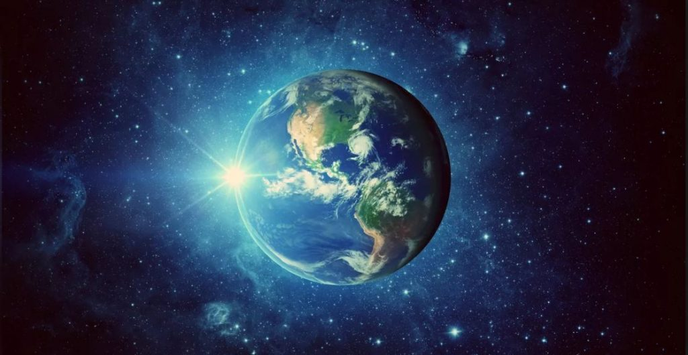

დედამიწა (სიმბოლო: 🜨) — მზის სისტემაში მზიდან მესამე პლანეტა. იგი დედამიწის ტიპის პლანეტებს შორის უდიდესია და სამყაროში ცნობილი ერთადერთი ადგილია, რომელიც დასახლებულია ცოცხალი არსებებით. დედამიწის ზედაპირის უდიდესი ნაწილი წყალს უკავია, მის გარშემო კი ჰაერის გარსი - ატმოსფეროა. იგი დაახლოებით 4,3 მილიარდი წლის წინ წარმოიქმნა და მალევე შეიძინა თავისი ერთადერთი ბუნებრივი თანამგზავრი მთვარე. აგრეთვე, დღემდე აღმოჩენილია რამდენიმე კვაზითანამგზავრი. დედამიწის წარმოშობაზე პირველ მოსაზრებებს ჯერ კიდევ ძველი ბერძნები გამოთქვამდნენ, თუმცა მათი შეხედულებები მეცნიერულად დასაბუთებული არ იყო. XVIII საუკუნეში წამოყენებულ იქნა პირველი მეცნიერული ჰიპოთეზა, რომლის მიხედვითაც იგი კოსმოსური აირებისა და მტვრისგან წარმოიშვა. გამდნარი, გავარვარებული და სწრაფად მბრუნავი მასა, მიზიდულობის ძალის გავლენით, უზარმაზარ სფეროდ იქცა. დროთა განმავლობაში სფერო გაცივდა და მისი ზედაპირი მყარი ქერქით დაიფარა.
დედამიწის ფართობი:
დედამიწისთვის სახიფათო ციური სხეულები
| ციური სხეული | რისგან შედგება? | რა ზომისაა? | როგორ მოძრაობს? |
|---|---|---|---|
| ასტეროიდი | პლანეტოიტები | 2დან 10 ჰიგიამდე | წრიულად |
| კომეტა | ატომები,მოლეკულები,იონები | 15 დან 30 მლნ კმ_მდე | პირდაპირი მიმართულებით |
| მეტეორი და მეტეორიდები | ნახშირბადის ქონდრიტი,ჩვეულებრივი ქონდრიტები,ქონდრიტის ენსტატიტები,აქონდრიტები | 500000 დან 10000000კმ_მდე | პირდაპირი მიმართულებით |